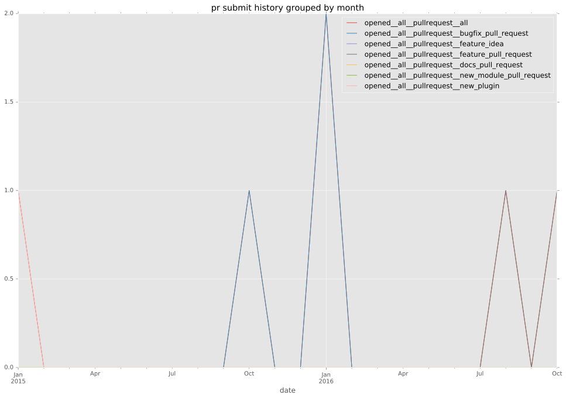
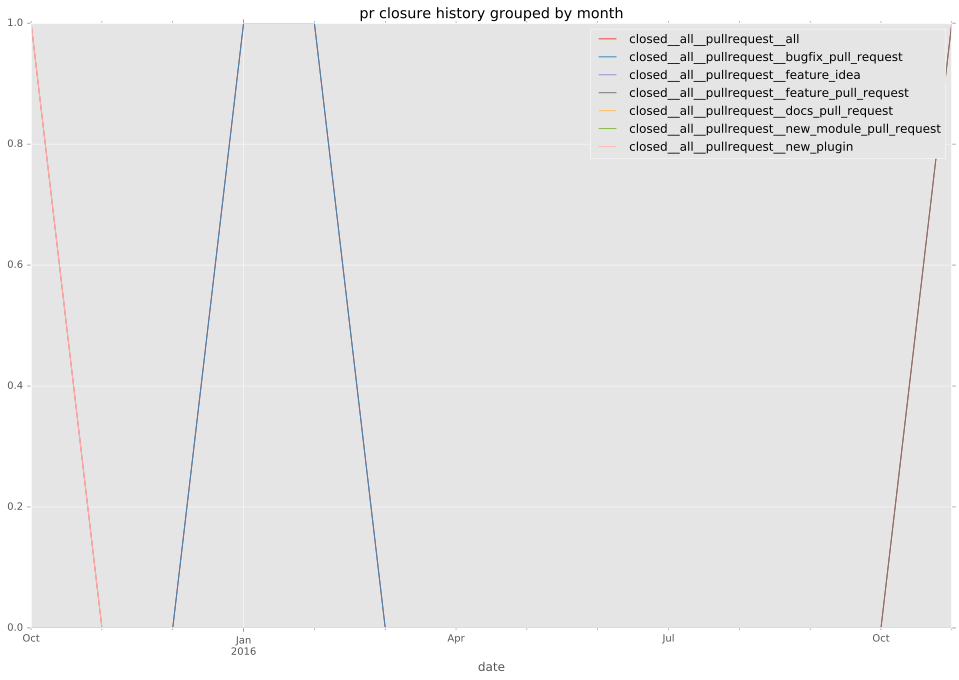

authors
maintainers
- schwartzmx
- trondhindenes
contributors
- h0nIg : 3 commits
- schwartzmx : 18 commits
- abadger : 1 commits
total issue counts
bugfix pull request: 2
pullrequest: 5
feature pull request: 2
feature idea: 1
issue: 3
new plugin: 1
bug report: 2
issue history
pullrequest history


days open by issue type
feature pull request
count: 0
std: nan
min: nan
max: nan
median: nan
mean: nan
all
count: 5
std: 83.894576702
min: 109
max: 272
median: 235.0
mean: 199.4
pullrequest
count: 0
std: nan
min: nan
max: nan
median: nan
mean: nan
bugfix pull request
count: 2
std: 0.0
min: 109
max: 109
median: 109.0
mean: 109.0
feature idea
count: 0
std: nan
min: nan
max: nan
median: nan
mean: nan
issue
count: 0
std: nan
min: nan
max: nan
median: nan
mean: nan
new plugin
count: 2
std: 0.0
min: 272
max: 272
median: 272.0
mean: 272.0
bug report
count: 1
std: nan
min: 235
max: 235
median: 235.0
mean: 235.0
closures grouped by total days open